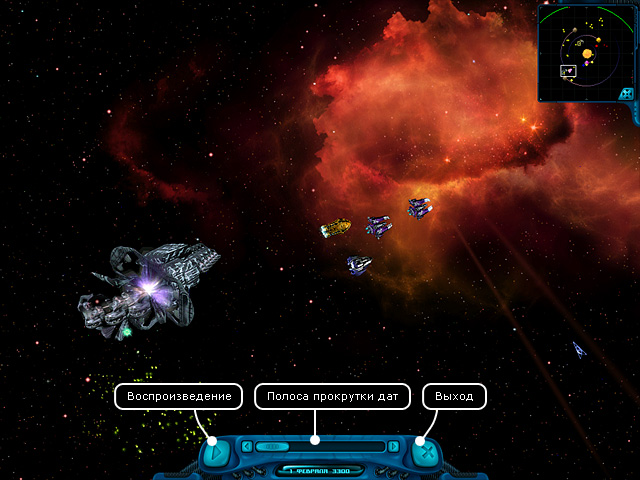

–уководство рейнджера
> Ёкран истории полетов
|
–уководство рейнджера
> Ёкран истории полетов
|
| Ёкран истории полетов ўелкнув по кнопке "»стори€ полетов", вы попадаете в режим просмотра истории полетов. ¬се событи€, происход€щие в игре вокруг игрока, записываютс€, и он, не успев что-то рассмотреть во врем€ полета, может зайти в режим истории полетов и повторно просмотреть интересующие его моменты. Ётот режим €вл€етс€ демонстрацией того, что мир игры по-насто€щему живой, и компьютерные персонажи продолжают действовать, даже когда игрок за ними не наблюдает! ѕолет каждого корабл€ четко просчитываетс€, и вы можете посмотреть все его действи€. ¬о врем€ просмотра истории можно самосто€тельно перемещать камеру в произвольную точку экрана и видеть все событи€, происход€щие за кадром. |

| «апись истории происходит, только когда корабль игрока находитс€ в открытом космосе. ¬о врем€ полета в гиперпространстве или нахождени€ на планете истори€ не записываетс€. „тобы начать просмотр: Х Ќажмите кнопку "¬оспроизведение". „тобы переместить камеру в произвольную точку космоса: Х ўелкните в окне радара вблизи желаемой точки или прокрутите экран при помощи мыши. „тобы установить дату начала просмотра: Х ќтмотайте полосу прокрутки дат до нужной. ѕримечание. оличество сохраненных дней в истории устанавливаетс€ игроком в "Ќастройках". „тобы вернутьс€ из режима просмотра истории в режим космоса: Х Ќажмите кнопку "¬ыход". |